pacman::p_load(tidyverse, tsibble, feasts, fable, seasonal)In-class Exercise 7: Visualising, Analysing and Forecasting Time-series Data: tidyverts methods
1. Getting Started
1.1 Load Required R Packages
For the purpose of this in-class exercise, the following R packages will be used.
The packages provide the following functionality: - tidyverse: Collection of packages for data manipulation and visualization - tsibble: Provides a data infrastructure for tidy temporal data - feasts: Feature Extraction And Statistics for Time Series analysis - fable: Forecasting models including exponential smoothing and ARIMA - seasonal: Seasonal decomposition of time series
1.2 Importing the data
ts_data <- read_csv("data/visitor_arrivals_by_air.csv")In the code chunk below, dmy() of lubridate package is used to convert data type of Month-Year field from Character to Date.
ts_data$`Month-Year` <- dmy(ts_data$`Month-Year`)2. Converting Data Formats for Time Series Analysis
2.1 Base ts object versus tibble object
ts_data_ts <- ts(ts_data)
head(ts_data_ts) Month-Year Republic of South Africa Canada USA Bangladesh Brunei China
[1,] 13879 3680 6972 31155 6786 3729 79599
[2,] 13910 1662 6056 27738 6314 3070 82074
[3,] 13939 3394 6220 31349 7502 4805 72546
[4,] 13970 3337 4764 26376 7333 3096 76112
[5,] 14000 2089 4460 26788 7988 3586 64808
[6,] 14031 2515 3888 29725 8301 5284 55238
Hong Kong SAR (China) India Indonesia Japan South Korea Kuwait Malaysia
[1,] 17103 41639 62683 37673 27937 284 31352
[2,] 21089 37170 47834 35297 22633 241 35030
[3,] 23230 44815 64688 42575 22876 206 37629
[4,] 17688 49527 58074 26839 20634 193 37521
[5,] 19340 67754 57089 30814 22785 140 38044
[6,] 19152 57380 70118 31001 22575 354 40419
Myanmar Pakistan Philippines Saudi Arabia Sri Lanka Taiwan Thailand
[1,] 5269 1395 18622 406 5289 13757 18370
[2,] 4643 1027 21609 591 4767 13921 16400
[3,] 6218 1635 28464 626 4988 11181 23387
[4,] 7324 1232 30131 644 7639 11665 24469
[5,] 5395 1306 30193 470 5125 11436 21935
[6,] 5542 1996 25800 772 4791 10689 19900
United Arab Emirates Vietnam Belgium & Luxembourg Finland France Germany
[1,] 2652 10315 1341 1179 6918 11982
[2,] 2230 13415 1449 1207 7876 13256
[3,] 3353 14320 1674 1071 8066 15185
[4,] 3245 15413 1426 768 8312 11604
[5,] 2856 14424 1243 690 7066 9853
[6,] 4292 21368 1255 624 5926 9347
Italy Netherlands Spain Switzerland United Kingdom Australia New Zealand
[1,] 2953 4938 1668 4450 41934 71260 7806
[2,] 2704 4885 1568 4381 44029 45595 4729
[3,] 2822 5015 2254 5015 49489 53191 6106
[4,] 3018 4902 1503 5434 35771 56514 7560
[5,] 2165 4397 1365 4427 24464 57808 9090
[6,] 2022 4166 1446 3359 22473 63350 9681Base ts objects differ from tibble dataframes in several ways. A ts object is specifically designed for time series analysis and has class types “mts”, “ts”, “matrix”, and “array”, whereas a tibble dataframe has class types “spec_tbl_df”, “tbl_df”, “tbl”, and “data.frame”.
2.2 Converting to tsibble format
The tsibble format allows us to work with time series data in a tidy framework, making it compatible with both dplyr/tidyr functions and time series analysis functions.
ts_tsibble <- ts_data %>%
mutate(Month = yearmonth(`Month-Year`)) %>%
as_tsibble(index = Month)This creates a tbl_ts object which can be used in both dplyr/tidyr operations and time series analysis.
3. Data Transformation for Visualization
To visualize time series data effectively, we need to transform the data from wide to long format.
ts_longer <- ts_data %>%
pivot_longer(cols = c(2:34),
names_to = "Country",
values_to = "Arrivals")4. Visualizing Time Series Data
4.1 Single Time Series Visualization
ts_longer %>%
filter(Country == "Vietnam") %>%
ggplot(aes(x = `Month-Year`,
y = Arrivals))+
geom_line(size = 0.5)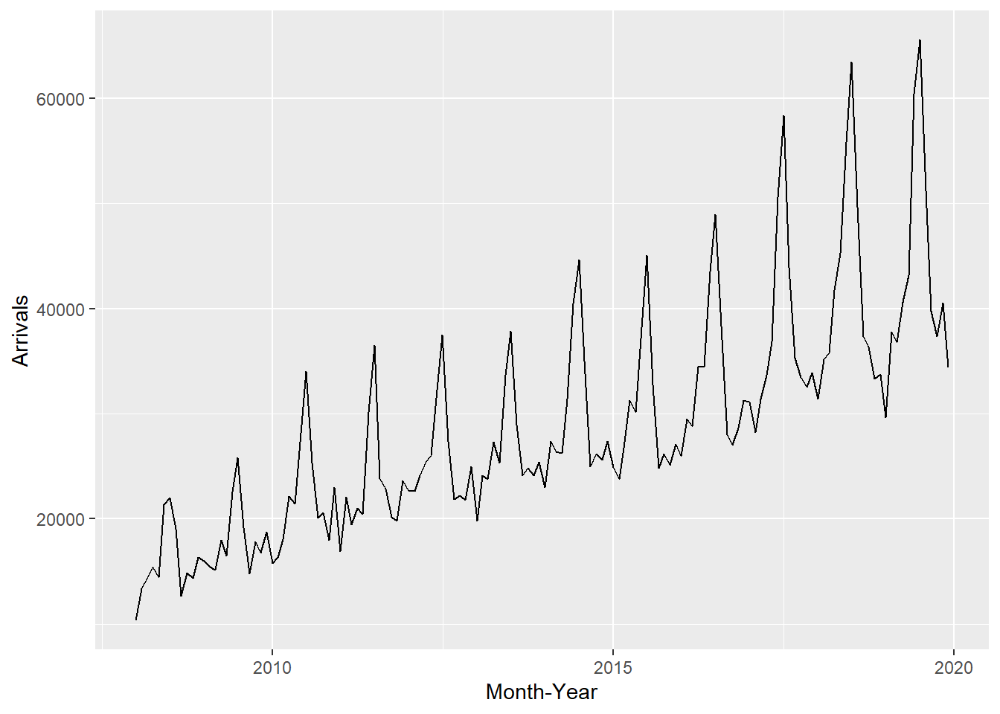
4.2 Multiple Time Series Visualization
ggplot(data = ts_longer,
aes(x = `Month-Year`,
y = Arrivals,
color = Country))+
geom_line(size = 0.5) +
theme(legend.position = "bottom",
legend.box.spacing = unit(0.5, "cm"))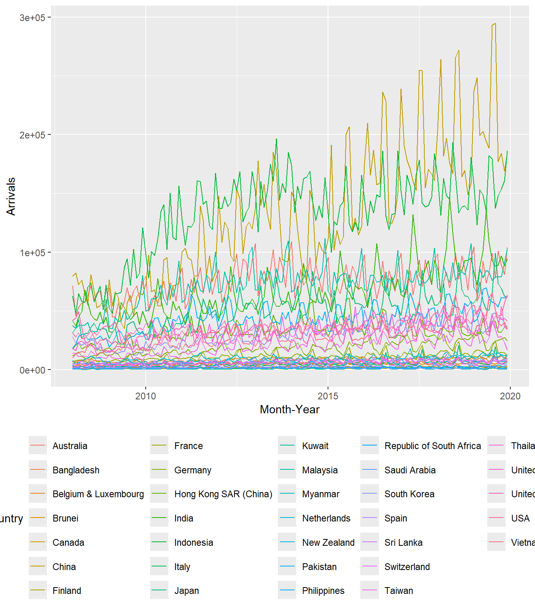
4.3 Using Facets for Better Comparison
Using facet_wrap allows us to compare multiple time series more effectively by giving each country its own panel.
ggplot(data = ts_longer,
aes(x = `Month-Year`,
y = Arrivals))+
geom_line(size = 0.5) +
facet_wrap(~ Country,
ncol = 3,
scales = "free_y") +
theme_bw()
It’s important to note that intervals are not constant across these visualizations.
5. Converting tsibble for Further Analysis
tsibble_longer <- ts_tsibble %>%
pivot_longer(cols = c(2:34),
names_to = "Country",
values_to = "Arrivals")6. Analyzing Time Series Patterns
6.1 Comparing Country-Specific Patterns
tsibble_longer %>%
filter(Country == "Vietnam" |
Country == "Italy") %>%
autoplot(Arrivals) +
facet_grid(Country ~ ., scales = "free_y")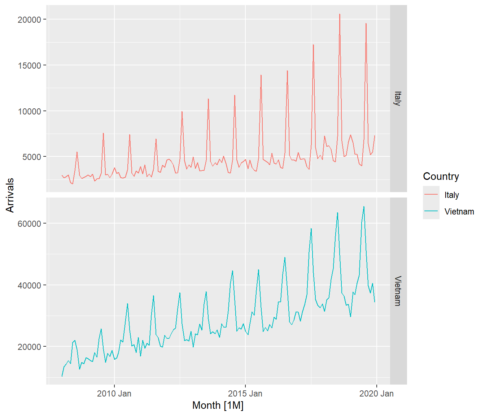
This visualization shows distinct patterns for different countries: - Italy shows a strong seasonal pattern with a large spike in August and relatively consistent lower values during the rest of the year - Vietnam shows higher arrivals in June and July with a peak in July, relatively stable numbers from September to December, and a gradual increase from January to May
6.2 Seasonal Subseries Analysis
tsibble_longer %>%
filter(Country == "Vietnam" |
Country == "Italy") %>%
gg_subseries(Arrivals)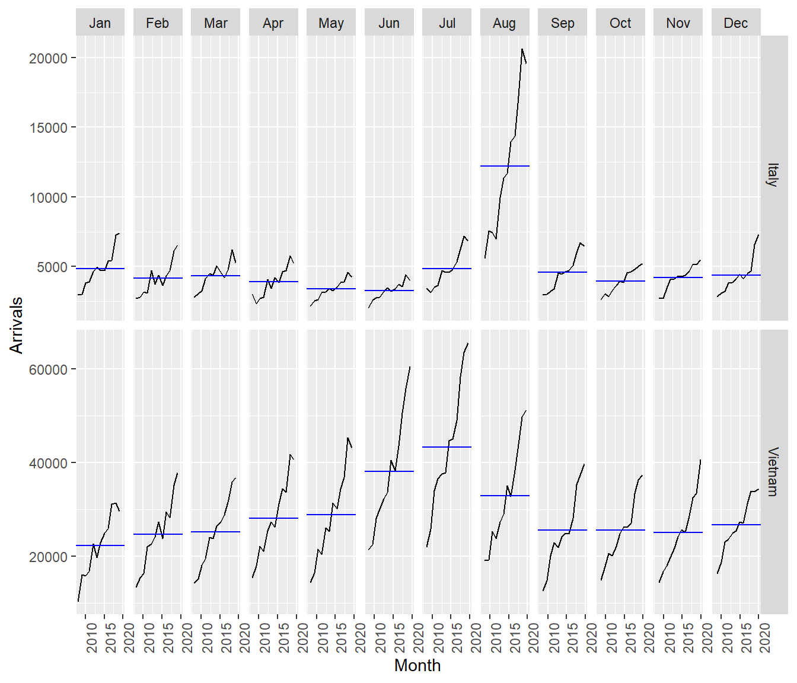
The subseries plot helps visualize seasonal patterns by month across years, making it easier to identify consistent seasonal behaviors.
7. Autocorrelation Analysis
7.1 ACF Plots
Autocorrelation Function (ACF) plots show how time series data is correlated with its lagged values.
tsibble_longer %>%
filter(Country == "Vietnam" |
Country == "Italy" |
Country == "United Kingdom" |
Country == "China") %>%
ACF(Arrivals) %>%
autoplot()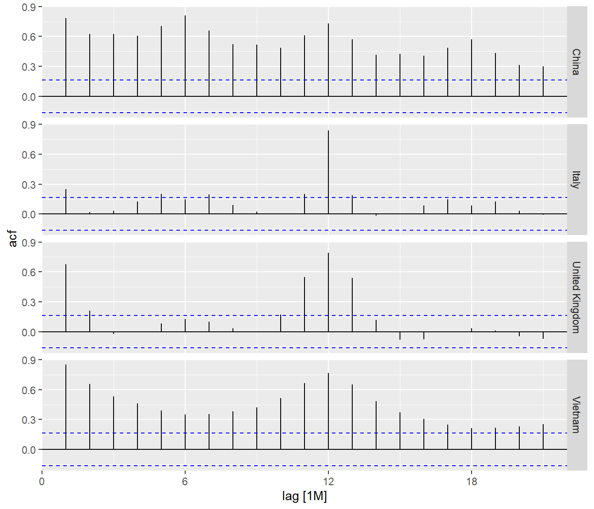
The ACF plots reveal important patterns: - China shows a 6-month periodicity - Italy shows a 12-month peak with weak correlation at first month (~0.3) - For statistically significant correlation, values should exceed the blue line (95% confidence level) - For China and Vietnam, most/all lags show statistical significance - For China and Vietnam, correlation decreases then increases again, but with different periodicity (Vietnam: 12 months, China: 6 months) - UK shows significant lag at t-1, then non-significant values, then significance again at 12 months, indicating weak trend but strong annual seasonality - Both UK and Italy show less pronounced seasonal patterns compared to Vietnam and China
7.2 PACF Plots
Partial Autocorrelation Function (PACF) plots show the direct correlation between observations at different lags after removing the effects of intermediate lags.
tsibble_longer %>%
filter(Country == "Vietnam" |
Country == "Italy" |
Country == "United Kingdom" |
Country == "China") %>%
PACF(Arrivals) %>%
autoplot()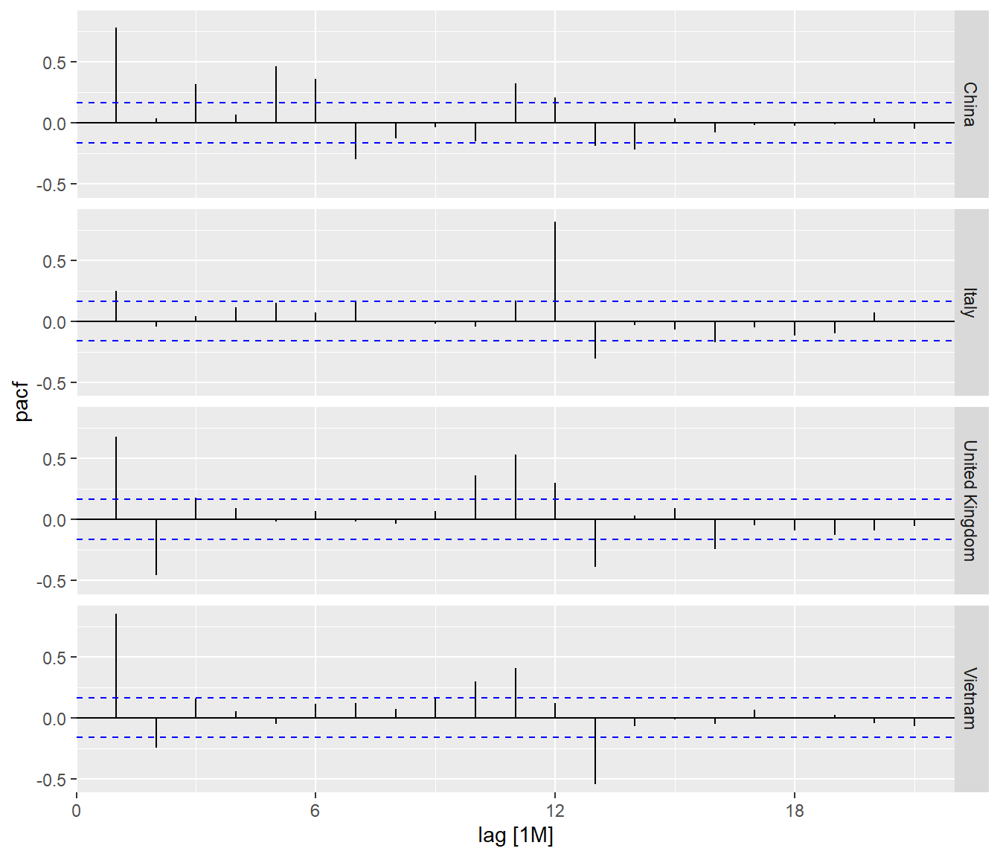
PACF plots help identify what might happen with further decomposition: - For the UK, the first lag is positive while the second lag is negative, suggesting a turning point where arrival patterns change - Statistical significance is indicated when values extend beyond the blue confidence interval - These visualizations help identify both statistically significant patterns and potential turning points in the data
8. Time Series Decomposition
Decomposing time series helps separate the data into trend, seasonal, and remainder components.
tsibble_longer %>%
filter(Country == "Vietnam") %>%
model(stl = STL(Arrivals)) %>%
components() %>%
autoplot()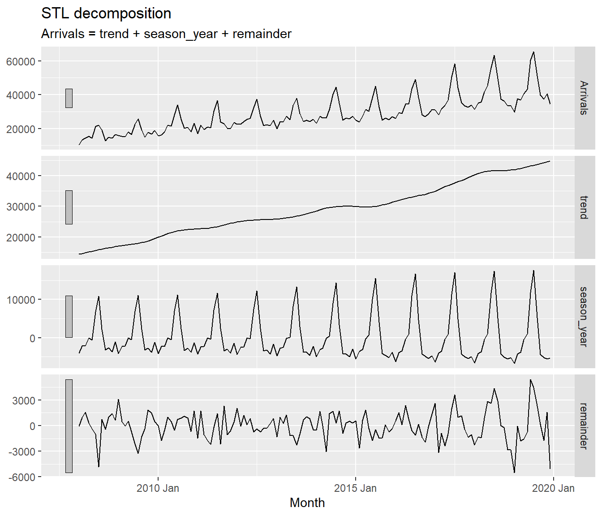
The decomposition shows: - The trend component shows the long-term movement - The seasonal component shows regular patterns - The remainder shows what’s left after removing trend and seasonality
If the remainder shows no clear pattern, it’s considered “white noise” - indicating a good decomposition. When patterns remain in the remainder, it suggests the decomposition is incomplete, which may indicate that more advanced methods like machine learning might be needed.
9. Forecasting
9.1 Creating Training and Hold-out Sets
For time series forecasting, we can’t use random sampling for validation. Instead, we keep the most recent data as a hold-out set.
vietnam_ts <- tsibble_longer %>%
filter(Country == "Vietnam") %>%
mutate(Type = if_else(
`Month-Year` >= "2019-01-01",
"Hold-out", "Training"))vietnam_train <- vietnam_ts %>%
filter(`Month-Year` < "2019-01-01")9.2 Decomposing the Training Data
It’s important to analyze training data before forecasting to understand its components.
vietnam_train %>%
model(stl = STL(Arrivals)) %>%
components() %>%
autoplot()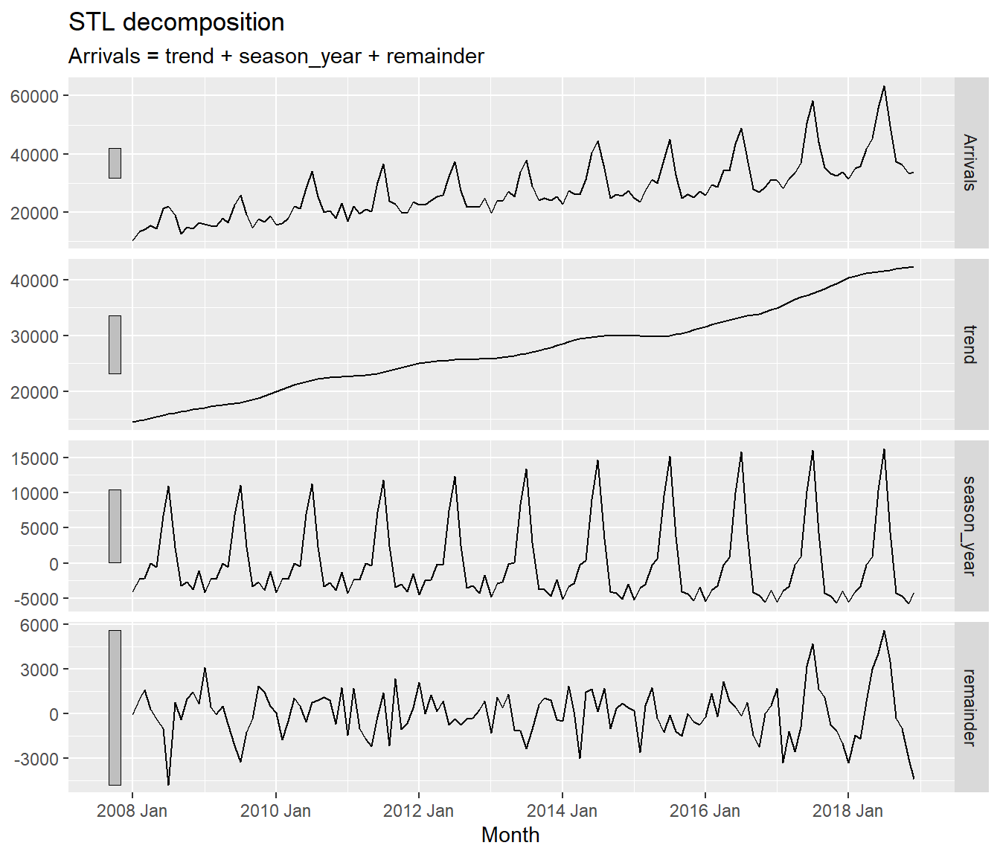
9.3 Fitting Forecast Models
When fitting a good forecast model, the residuals should follow a normal distribution, indicating that the model has captured the systematic patterns in the data.
Here we create an automatic ETS (Error, Trend, Seasonal) model:
fit_autoETS <- vietnam_train %>%
model(ETS(Arrivals))9.4 Visualizing the Forecast Results
fc_autoETS <- fit_autoETS %>%
forecast(h = "12 months")
vietnam_ts %>%
ggplot(aes(x = Month,
y = Arrivals)) +
autolayer(fc_autoETS,
alpha = 0.6) +
geom_line(aes(
color = Type),
alpha = 0.8) +
geom_line(aes(
y = .mean,
colour = "Forecast"),
data = fc_autoETS) +
geom_line(aes(
y = .fitted,
colour = "Fitted"),
data = augment(fit_autoETS))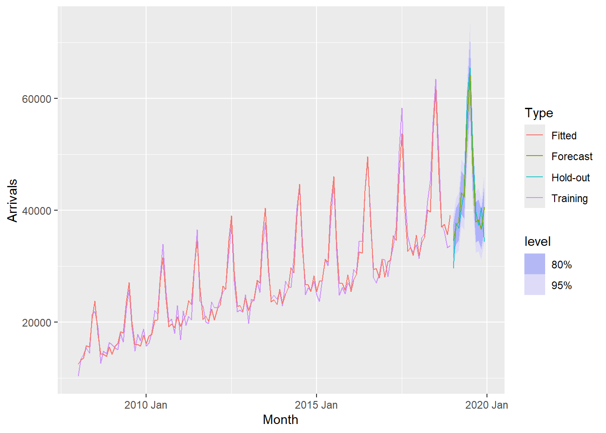
When visualizing forecast results, it’s most useful to focus on the last few cycles rather than the entire history, as we want to assess the accuracy of predictions compared to the hold-out data.
10. Additional Insights
10.1 Comparing Seasonal Patterns Across Countries
tsibble_longer %>%
filter(Country == "Vietnam" |
Country == "Italy" |
Country == "Malaysia" |
Country == "Germany") %>%
gg_season(Arrivals) +
labs(title = "Seasonal Patterns by Country",
y = "Visitor Arrivals")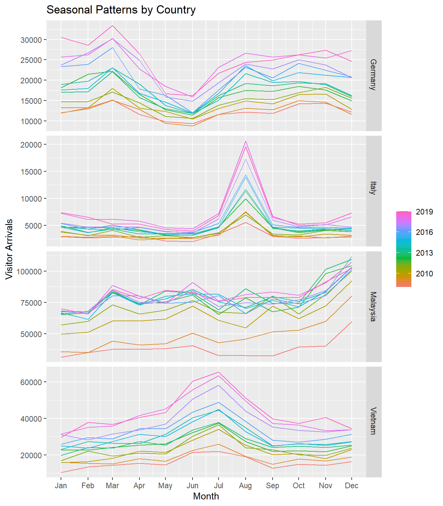
This visualization shows how visitor arrivals vary by month across different countries, highlighting distinct seasonal tourism patterns.
10.2 Exploring Trend vs Seasonality Strength
country_features <- tsibble_longer %>%
features(Arrivals, feat_stl)
ggplot(country_features, aes(x = trend_strength, y = seasonal_strength_year)) +
geom_point() +
geom_text(aes(label = Country), check_overlap = TRUE, hjust = -0.1, vjust = -0.1) +
labs(x = "Trend Strength", y = "Seasonal Strength",
title = "Trend vs Seasonal Strength by Country") +
theme_minimal()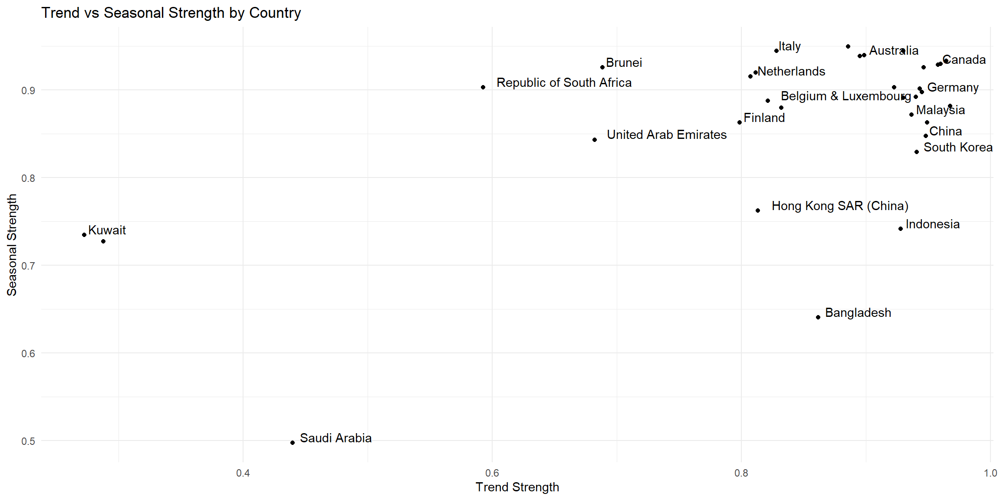
This scatter plot helps identify which countries have strong seasonal patterns versus consistent growth trends, providing insight for targeted tourism strategies.
10.3 ARIMA Model Fitting and Comparison
fit_arima <- vietnam_train %>%
model(
arima_auto = ARIMA(Arrivals),
ets_auto = ETS(Arrivals)
)
fit_arima %>%
forecast(h = "12 months") %>%
autoplot(vietnam_ts, level = NULL) +
labs(title = "ARIMA vs ETS Model Comparison",
y = "Visitor Arrivals")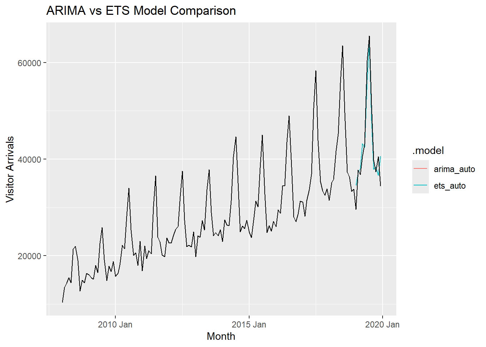
Comparing different forecasting methods helps identify which approach works best for specific time series patterns.
10.4 Detecting Anomalies in Visitor Arrivals
augment(fit_autoETS) %>%
mutate(
anomaly = abs(.resid) > 2*sd(.resid, na.rm = TRUE)
) %>%
ggplot(aes(x = Month, y = Arrivals)) +
geom_line() +
geom_point(aes(color = anomaly), size = 1) +
scale_color_manual(values = c("FALSE" = NA, "TRUE" = "red")) +
labs(title = "Anomaly Detection in Vietnam Visitor Arrivals",
color = "Anomaly")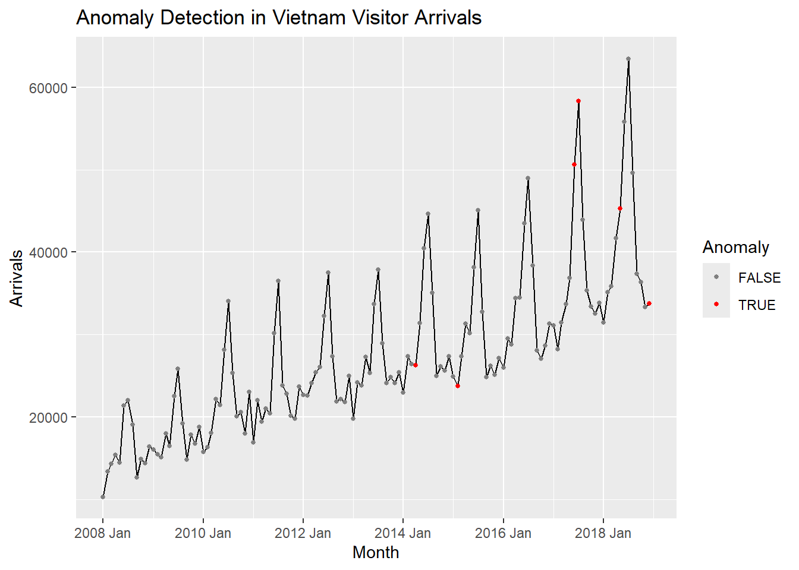
This visualization helps identify unusual spikes or drops in visitor arrivals that might warrant further investigation.
10.5 Visualizing Forecast Uncertainty
fc_autoETS %>%
autoplot(vietnam_ts) +
labs(title = "Forecast with Prediction Intervals",
y = "Visitor Arrivals") +
theme_minimal()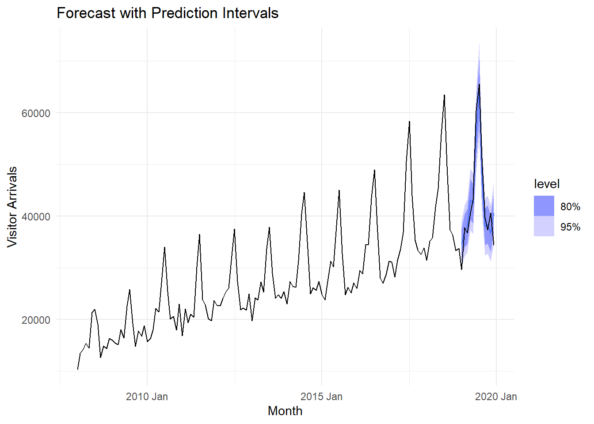
Understanding forecast uncertainty is crucial for planning, as it shows the range of likely outcomes rather than just point estimates.